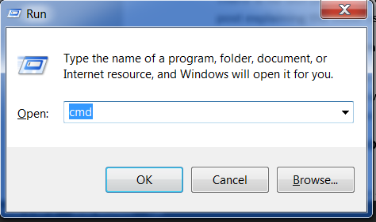
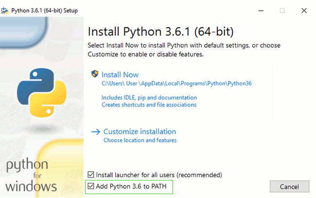
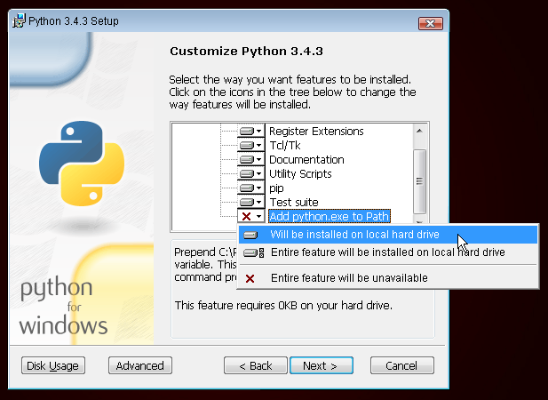

Si estás haciendo el tutorial en casa
Si estás haciendo el tutorial en casa, y no en uno de los eventos de Django Girls, puedes saltar este capítulo por completo e ir directamente al capítulo ¿cómo funciona Internet?.
Esto es porque cubrimos las instalaciones de cosas a medida que se requieran en el tutorial – esta es solamente una página adicional que reúne toda la información de instalación en un solo lugar (lo que es útil para algunos formatos de taller). Puedes escoger instalar todo lo que está en esta página ya mismo si lo deseas. Pero si quieres empezar a aprender cosas antes de instalar un grupo de materiales en tu computadora, salta este capítulo y te explicaremos las partes de la instalación luego, cuando sean necesarias.
¡Buena suerte!
Si estás asistiendo a un workshop
Si estás asistiendo a uno de los Django Girls events:
Tu workshop puede tener una “fiesta de instalación” antes del workshop principal. Si estás en un equipo de instalación, ¡ésta página es para ti! Sigue las instrucciones aquí para obtener todo lo que tu necesitas para el workshop de instalación, con la ayuda de los entrenadores si lo necesitas. Entonces en el workshop principal, tu estarás preparado para saltar las instrucciones de instalación que encontrarás en el tutorial principal cuando llegues a ellos.
Los organizadores del taller pueden pedirte que en casa intentes instalar todo en tu computadora antes de iniciar el taller. Si has estado preguntando cómo hacer esto, ¡esta página es para ti! Sigue las instrucciones aquí, lo mejor puedas. Así, en el taller principal, cuando estés en uno de los pasos de la instalación del tutorial, y si no tenías esa pieza instalada, puedes pedir ayuda a una de tus entrenadoras.
Si tu taller no tiene una sesión de instalación (o no pudiste asistir), y si los organizadores no te piden que intentes instalar todo antes de tu llegada, salta esta página y ve al capítulo Cómo el internet funciona. Instalarás todo lo que necesitas para trabajar a lo largo del tutorial.
Instalación
En este tutorial vas a construir un blog. Según cómo vayas a través del tutorial, serás instruida en cómo instalar varios softwares en tu computadora y configurar algunas cuentas online como sean necesarias. Esta página reune todas las instalaciones e instrucciones del registro en un lugar (el cual es útil para algunos formatos del taller).
Si utilizas Chromebook, por favor sigue estas instrucciones.
Puedes saltarte esta sección en caso de que no estés usando un Chromebook. Si lo usas, tu experiencia de instalación será algo diferente. Puedes ignorar el resto de las instrucciones de instalación.
IDE en la nube (PaizaCloud Cloud IDE, AWS Cloud9)
Nube de IDE es una herramienta que te ofrece un editor de código y el acceso por medio de internet a una computadora donde puedes instalar, escribir y ejecutar el software. Durante este tutorial, el IDE en la nube te servirá como tu máquina local. Seguirás ejecutando comandos en una terminal igual que tus compañeros de clase en OS X, Ubuntu, o Windows, pero tu terminal en realidad estará conectada a una computadora trabajando en algún otro lugar, que el IDE en la nube configura para ti. Aquí están las instrucciones para IDEs en la nube (PaizaCloud Cloud IDE, AWS Cloud9). Puedes elegir uno de los IDEs en la nube, y seguir sus instrucciones.
PaizaCloud Cloud IDE
- Ve a PaizaCloud Cloud IDE
- Crea una cuenta
- Haz clic en Nuevo Servidor y elige la aplicación Django
- Haz clic en el botón Terminal (en el lado izquierdo de la ventana)
Ahora deberías ver una interfaz con una barra y botones en la izquierda. Haz click en al botón “Terminal” para abrir la ventana de la terminal con un símbolo de sistema como este:
Terminal
$La terminal en el IDE en la nube PaizaCloud está preparada para ejecutar tus instrucciones. Puedes redimensionar o maximizar la ventana para hacerla un poco más grande.
AWS Cloud9
Actualmente Cloud 9 requiere que te registres con AWS y ingreses la información de la tarjeta de crédito.
- Instala Cloud 9 desde la Chrome web store
- Ve a c9.io y haz clic en Get started with AWS Cloud9
- Regístrate en una cuenta AWS (requiere información de tarjeta de crédito, pero puedes usar gratis)
- En el panel de control AWS, introduz Cloud9 en la barra de búsqueda y haz clic en él
- En el panel de control de la Cloud 9, haz clic en Create environment
- Nómbralo django-girls
- Mientras configuras los ajustes, selecciona Create a new instance for environment (EC2) para “Environment Type” y selecciona el valor t2.micro para “Instance type” (debería decir “Free-tier eligible.”). La configuración de ahorro de costes por defecto está bien y puede mantener los otros valores por defecto.
- Haz clic en Next step
- Haz clic en Create environment
Ahora deberías ver una interfaz con una barra, una gran ventana principal con algún texto y una ventana pequeña en la parte inferior que se vería así:
yourusername:~/workspace $El área de abajo es tu terminal. Puedes usar el terminal para enviar instrucciones al ordenador remoto en Cloud 9. Puedes redimensionar o maximizar la ventana para hacerla un poco más grande.
Entorno Virtual
Un entorno virtual (también llamado “virtualenv” o “vitual environment” en inglés) es un tipo de caja privada donde podemos introducir código para el proyecto en el cual estemos trabajando. Lo usamos para mantener separados los diferentes trozos de código de nuestros proyectos, de modo que no haya mezclas indeseadas entre los mismos.
Ejecutar:
Cloud 9 mkdir djangogirls cd djangogirls python3.6 -mvenv myvenv source myvenv/bin/activate pip install django~=3.2.10
(nota que en la última línea usamos una virgulilla (~) seguida de un signo igual ~=).
GitHub
Hazte una cuenta de GitHub.
PythonAnywhere
El tutorial de Django Girls incluye una sección en lo que se conoce como Despliegue, lo cual se refiere al proceso de tomar el código que da vida a tu nueva aplicación web y moverlo a un ordenador de acceso público (llamado servidor) para que otras personas puedan ver tu trabajo.
Esta parte del tutorial es algo extraña usando un Chromebook, pues ya estamos usando un computador conectado a Internet (contrario a, por ejemplo, un portátil). Sin embargo, aún es útil, ya que podemos pensar que nuestro espacio de trabajo en Cloud 9 como un repositorio para nuestro trabajo “en progreso” y Python Anywhere como un lugar donde mostrar nuestro trabajo más completo.
Así que, registra una cuenta en Python Anywhere <www.pythonanywhere.com>.
Breve introducción a la línea de comandos
Muchos de los pasos citados abajo hacen referencia a la “consola”, “terminal”, “ventana de comandos”, o “línea de comandos” – todos éstos términos significan la misma cosa: una ventana en tu computadora donde puedes introducir comandos. Cuando estés en el tutorial principal, aprenderás más acerca de la línea de comandos. Por ahora, la parte principal que necesitas es saber cómo abrir una ventana de comandos y cómo luce:
Dependiendo de tu versión de Windows y tu teclado, una de las opciones siguientes debería abrir una ventana de comandos (puede que necesites experimentar un poco, pero no se necesita probar todas estas sugerencias):
- Ve al menú o pantalla de Inicio, y escribe “Símbolo del Sistema” en el cuadro de búsqueda.
- Ve a Menú de inicio → Windows System → Command Prompt.
- Ve al menú de Inicio → Todos los Programas → Accessorios → Símbolo del Sistema.
- Ve a la pantalla de Inicio, pasa el ratón sobre la esquina inferior izquierda de la pantalla, y haz click en la flecha hacia abajo (en una pantalla táctil, desliza hacia arriba desde la parte baja de la pantalla). La página de la Aplicación debería abrirse. Haz click en Símbolo del Sistema en la sección Sistema de Windows.
- Mantén la tecla especial de Windows de tu teclado y pulsa “X”. Elige “Símbolo del Sistema” del menú emergente.
- Mantén pulsada la tecla de Windows y pulsa “R” para abrir una ventana “Ejecutar”. Escribe “cmd” en la caja, y haz click en OK.

Más adelante en este tutorial, necesitarás tener dos consolas de comandos abiertas a la misma vez. Sin embargo, en algunas versiones de Windows, si ya tienes abierta una ventana de comandos e intentas abrir otra usando el mismo método, simplemente maximizará la que ya tienes abierta. ¡Inténtalo ahora en tu ordenador y mira qué ocurre! Si solo se abre una ventana de comandos, intenta alguno de los otros métodos explicados anteriormente. Al menos uno de ellos debería abrir una nueva ventana de comandos.
Ve a Aplicaciones → Utilidades → Terminal.
Instalar Python
Para lectores en casa: este capitulo se cubre en el vídeo Installing Python & Code Editor.
Esta sección está basada en un tutorial de Geek Girls Carrots (https://github.com/ggcarrots/django-carrots)
Django está escrito en Python. Necesitamos Python para hacer cualquier cosa en Django. ¡Empecemos con instalarlo! Queremos que instales la última versión de Python 3, así que si tienes una versión anterior, necesitarás actualizarla. Si ya tienes la versión 3.4 o una superior, debería ir bien.
Por favor, instala Python normalmente de la siguiente forma, incluso si tienes Anaconda instalada en el ordenador.
Primero comprueba si tu ordenador ejecuta la versión 32 bits de Windows o la de 64, en “Tipo de sistema” en la página de “Acerca de”. Para llegar a esta página, intenta uno de estos métodos:
- Presiona la tecla de Windows y la tecla Pause/Break al mismo tiempo
- Abre el Panel de Control desde el menú de Windows, después accede a Sistema & y Seguridad, luego a Sistema
- Presiona el botón de Windows, luego accede a Configuración > Sistema > Acerca de
Puedes descargar Python para Windows desde la siguiente web https://www.python.org/downloads/windows/. Clica en el enlace “Latest Python 3 Release -Python x.x.x”. Si tu ordenador ejecuta la versión de 64 bits de Windows, descarga Windows x86-64 executable installer. De lo contrario, descarga Windows x86 executable installer. Después de descargar el instalador, deberías ejecutarlo (dándole doble click) y seguir las instrucciones.
Una cosa para tener en cuenta: Durante la instalación, verás una ventana de “Setup”. Asegúrate de marcar las casillas “Add Python 3.6 to PATH” o “Add Python to your environment variables” y hacer click en “Install Now”, como se muestra aquí (puede que se vea un poco diferente si estás instalando una versión diferente):

Cuando la instalación se complete, verás un cuadro de diálogo con un enlace que puedes seguir para saber más sobre Python o sobre la versión que has instalado. Cierra o cancela ese dialogo – ¡Aprenderás más en ese tutorial!
Nota: si estás usando una versión anterior de Windows (7, Vista o cualquier versión anterior) y el instalador de la versión 3.6.x de Python falla con un error, intenta también:
- instalar todas las actualizaciones de Windows e intenta instalar Python de nuevo; o
- instalar una versión de Python anterior, por ejemplo, 3.4.6.
Si instalas una versión anterior de Python, la pantalla de instalación puede ser un poco diferente a la mostrada arriba. Asegúrate de desplazarte hacia abajo para ver “Add python.exe to Path”, después haz click en el botón de la izquierda y selecciona “Will be installed on local hard drive”:

Nota Antes de instalar Python en OS X, debes asegurarte de que la configuración del Mac permita instalar paquetes que no estén en la App Store. ve a preferencias del sistema (System Preferences, está en la carpeta Aplicaciones), da click en “Seguridad y privacidad” (Security & Privacy) y luego la pestaña “General”. Si tu “Permitir aplicaciones descargadas desde:” (Allow apps downloaded from:) está establecida a “Mac App Store,” cambia a “Mac App Store y desarrolladores identificados.” (Mac App Store and identified developers)
Necesitas ir a la página web https://www.python.org/downloads/release/python-361/ y descargar el instalador de Python:
- Descarga el archivo Mac OS X 64-bit/32-bit installer,
- Doble click en python-3.6.1-macosx10.6.pkg para ejecutar el instalador.
Es muy posible que ya tengas instalado Python de serie. Para verificar que ya lo tienes instalado (y qué versión es), abre una consola y escribe el siguiente comando:
$ python3 --version
Python 3.6.1Si tienes instalada una versión diferente de Python, al menos 3.4.0 (por ejemplo 3.6.0), entonces no tienes que actualizar. Si tu no has instalado Python, o si tu quieres una versión diferente, primero verifica que distribución de Linux estás usando con el siguiente comando:
$ grep ^NOMBRE= /etc/os-releaseDespués, dependiendo de el resultado, sigue una de las siguientes guías de instalación bajo ésta sección.
Escribe este comando en tu consola:
$ sudo apt install python3Install Python: Fedora
Usa este comando en tu consola:
$ sudo dnf install python3Si estás en versiones antiguas de Fedora, puedes obtener un error que el comando dnf no se encuentra. En ese caso, necesitas usar yum en su lugar.
Install Python: openSUSE
Usa este comando en tu consola:
$ sudo zypper install python3Verifica si la instalación fue exitosa abriendo una terminal o consola, y corriendo el comando python3:
$ python3 --version
Python 3.6.1La versión mostrada puede ser diferente desde 3.6.1 – debería marcar la versión que instalaste.
NOTA: Si está en Windows y recibe un mensaje de error que indica que python3 no se encontró, intente usar python (sin el 3) y compruebe si todavía podría ser una versión de Python que sea 3.4.0 o superior. Si eso tampoco funciona, puede abrir un nuevo símbolo del sistema e intentar nuevamente; Esto sucede si usa un símbolo del sistema abierto antes de la instalación de Python.
Si tienes alguna duda, o si ocurrió algún error y no tienes idea sobre qué hacer, ¡por favor pregunta a tu entrenador! Algunas veces las cosas no van bien y es mejor pedir ayuda a alguien con más experiencia.
Instala un Editor de Código
Hay muchos editores diferentes y la elección es principalmente una cuestión de preferencia personal. La mayoría de programadores de Python usan IDEs (Entornos de Desarrollo Integrados) complejos pero muy potentes, como PyCharm. Sin embargo, como principiante, probablemente no es lo más aconsejable; nuestras recomendaciones son igualmente potentes pero mucho más simples.
Abajo presentamos nuestras sugerencias pero también puedes preguntarle a tu mentora cuáles son las suyas -será más fácil que te ayude.
Visual Studio Code
Visual Studio Code es un recurso de edición de código desarrollado por Microsoft para Windows, Linux y macOS. Esto incluye soporte para depuración, control de Git incrustado, sintaxis destacada, completación de código inteligente, fragmentos y refactorización de código.
Gedit
Gedit es un editor gratuito de código abierto, disponible para todos los sistemas operativos.
Sublime Text
Sublime Text es un editor muy popular con un periodo de prueba gratis, y está disponible para todos los sistemas operativos.
¿Por qué estamos instalando un editor de código?
Tú podrías estar preguntándote por qué estamos instalando este especializado software editor de código en vez de usar algo como Word o Notepad.
La primera razón es que el código necesita ser texto plano, y el problema con programas como Word y Textedit es que no producen texto plano, sino texto enriquecido (con fuentes y formatos), usando formatos personalizados como RTF ( Formato del Texto Enriquecido, del inglés Rich Text Format).
La segunda razón es que los editores de código están especializados para esta función, así ellos pueden proveer ayuda a características como destacar código con color acorde a su significado, o automáticamente cerrando etiquetas para ti.
Veremos todo esto en acción más adelante. Pronto pensarás en convertir el editor de código en una de tus herramientas favoritas. :)
Configura el entorno virtual (virtualenv) e instala Django
Parte de esta sección está basada en tutoriales por Geek Girls Carrots (https://github.com/ggcarrots/django-carrots).
Parte de este capítulo está basada en el django-marcador tutorial bajo la licencia Creative Commons Attribution-ShareAlike 4.0 internacional. El tutorial de django-marcador tiene derechos de autor de Markus Zapke-Gündemann et al.
Entorno virtual
Antes de instalar Django, instalaremos una herramienta extremadamente útil que ayudará a mantener tu entorno de desarrollo ordenado en tu computadora. Es posible saltarse este paso, pero es altamente recomendable. ¡Empezar con la mejor configuración posible te ahorrará muchos problemas en el futuro!
Así que, vamos a crear un entorno virtual (también llamado un virtualenv). Virtualenv aísla tu configuración de Python/Django para cada proyecto. Esto quiere decir que cualquier cambio que hagas en un sitio web no afectará a ningún otro que estés desarrollando. Genial, ¿no?
Todo lo que necesitas hacer es encontrar un directorio en el que quieras crear el virtualenv; tu directorio home, por ejemplo. En Windows, puede verse como C : Users Name (donde Name es el nombre de tu usuario).
NOTA: En Windows, asegúrate de que este directorio no contiene caracteres especiales o acentuados; si tu nombre de usuario contiene caracteres acentuados, usa un directorio distinto, por ejemplo C : djangogirls.
Para este tutorial usaremos un nuevo directorio djangogirls en tu directorio home:
$ mkdir djangogirls
$ cd djangogirlsHaremos un virtualenv llamado myvenv. El comando general estará en el formato:
$ python3 -m venv myvenvPara crear un nuevo virtualenv, necesitas abrir una terminal “command prompt” y ejecutar python -m venv myvenv. Se verá así:
C:\Users\Name\djangogirls> python -m venv myvenvDonde myvenv es el nombre de tu virtualenv. Puedes utilizar cualquier otro nombre, pero asegúrate de usar minúsculas y no usar espacios, acentos o caracteres especiales. También es una buena idea mantener el nombre corto. ¡Vas utilizarlo muchas vecesl!
Podemos crear un virtualenv en Linux y OS X, es tan sencillo como ejecutar python3 -m venv myvenv. Se verá así:
$ python3 -m venv myvenvmyvenv es el nombre de tu virtualenv. Puedes usar cualquier otro nombre, pero sólo utiliza minúsculas y no incluyas espacios. También es una buena idea mantener el nombre corto. ¡Vas a referirte muchas veces a él!
**NOTA:** En algunas versiones de Debian/Ubuntu, puede que obtengas el siguiente error:
``` bash
The virtual environment was not created successfully because ensurepip is not available. En sistemas Debian/Ubuntu, tendrás que instalar el paquete python3-venv usando el siguiente comando.
apt-get install python3-venv
Puede que tengas que usar sudo con este comando. Después de instalar el paquete python3-venv, vuelve a crear tu entorno virtual.
```
En este caso, sigue las instrucciones anteriores e instala el paquete python3-venv:
``` bash
$ sudo apt install python3-venv
```
NOTA: En algunas versiones de Debian/Ubuntu inicializar el entorno virtual de esta manera da el siguiente error:
``` bash
Error: Command '['/home/eddie/Slask/tmp/venv/bin/python3', '-Im', 'ensurepip', '--upgrade', '--default-pip']' returned non-zero exit status 1
```
Para evitar esto, utiliza directamente el comando virtualenv.
``` bash
$ sudo apt-get install python-virtualenv
$ virtualenv --python=python3.6 myvenv
```
NOTA: Si obtienes un error como
``` bash
E: Unable to locate package python3-venv
```
entonces ejecuta:
``` bash
sudo apt install python3.6-venv
```Trabajar con virtualenv
El comando anterior creará un directorio llamado myvenv (o cualquier nombre que hayas elegido) que contiene nuestro entorno virtual (básicamente un montón de archivos y carpetas).